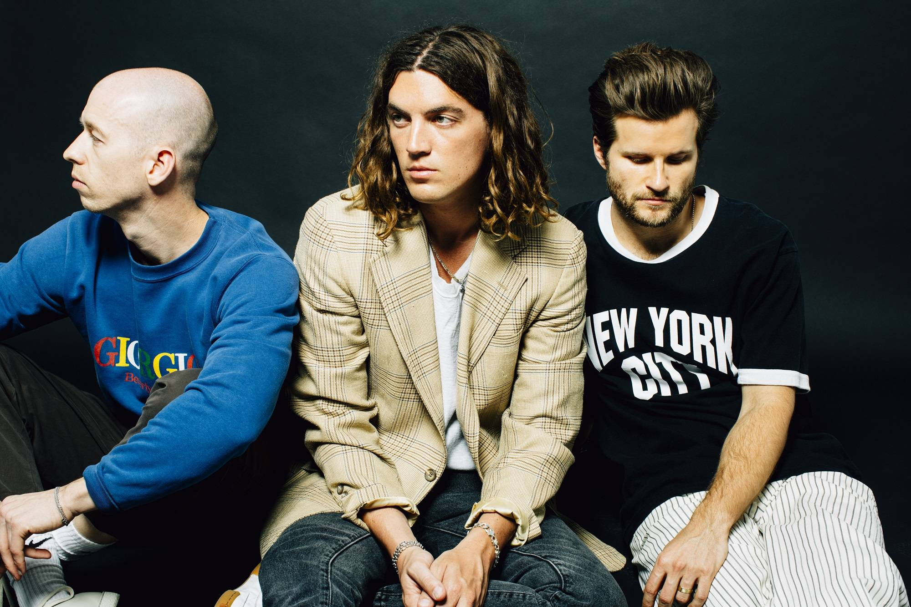
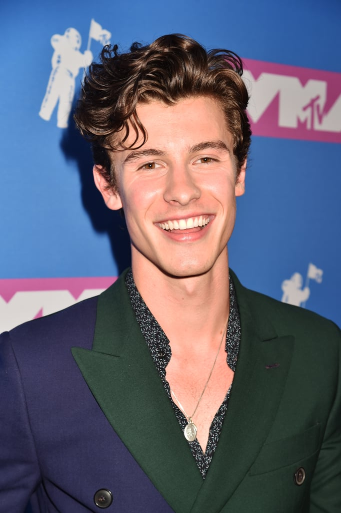
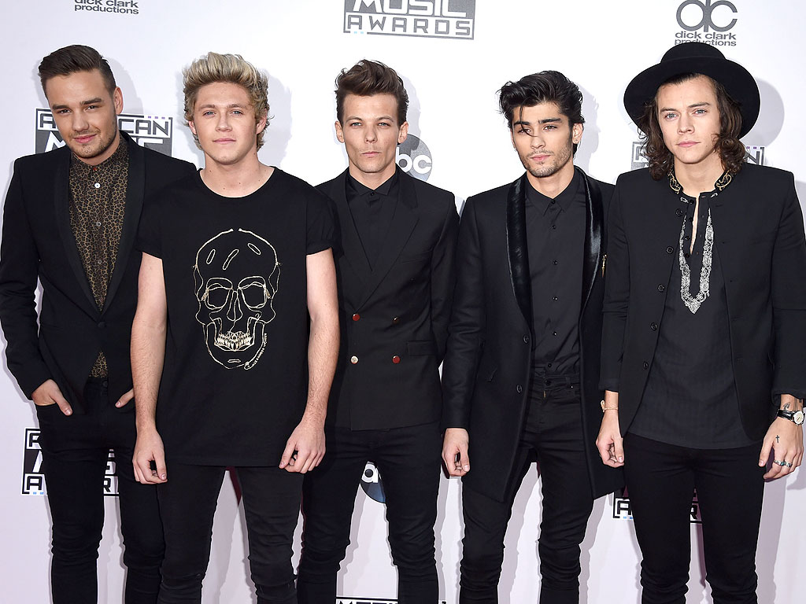
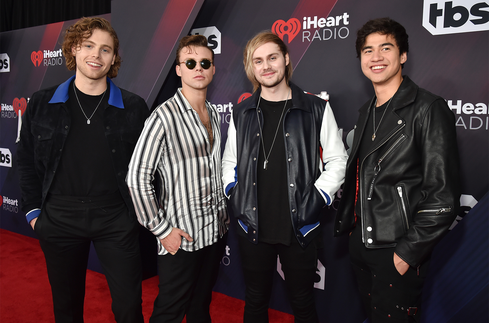

Concerts I've Been Too
08/21/2010 Justin Bieber
08/01/2014 One Direction
08/20/2015 One Direction
08/25/2015 5 Seconds of Summer
10/02/2016 Taylor Swift
08/26/2016 Shawn Mendes
05/29/2016 Jacob Whitesides
04/16/2016 PressPlay
12/17/2016 PressPlay
05/20/2016 PressPlay
02/02/2016 Why Don't We
07/18/2017 Why Don't We
04/29/2017 Stay You Pop Up Shop
06/30/2018 Cam Bogle
11/20/2018 Alec Benjamin
Bands and Artists I Like
LANY (pronounced 'lay-nee', an acronym for "Los Angeles New York") is an American indie pop band from Los Angeles, formed in March 2014. The band consists of Paul Klein, Les Priest, and Jake Clifford Goss.
Why Don't We is a pop band formed on September 27, 2016 by Jonah Marais. The band members are Zach Herron, Daniel Seavey, Jack Avery, Corbyn Besson and Jonah Marais.
Shawn Mendes is a Canadian singer and songwriter. He gained a following on Vine, Vines are 6 second videos and then by doing covers of songs on YouTube.
One Direction is a pop band that was formed by Simon Cowell. One Direction went on a hiatus on January 2016 and Zayn Malik left on March 25, 2015. The band members are Liam Payne, Niall Horan, Harry Styles, amd Louis Tomlinson.
5 Seconds of Summer is a Australian pop rock band that is from Sydney, New South wales, formed in 2011. The band members are Luke Hemmings, Michael Clifford, Ashton Irwin and Calum Hood.
